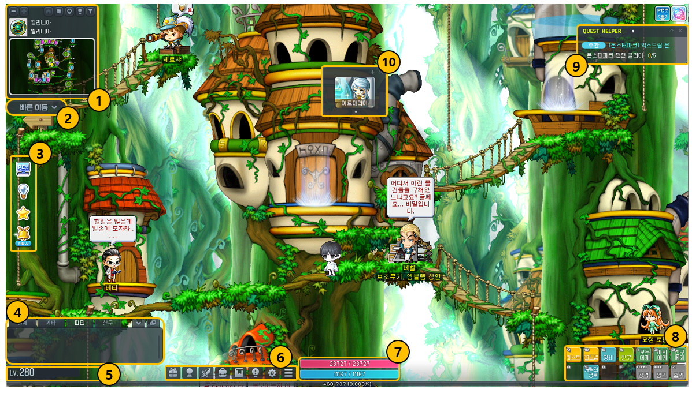
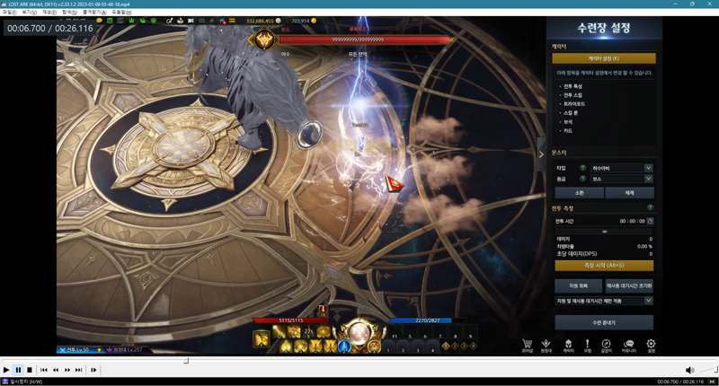
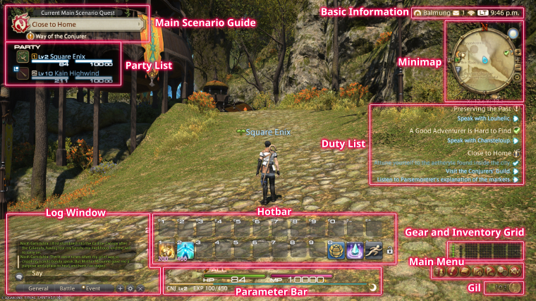
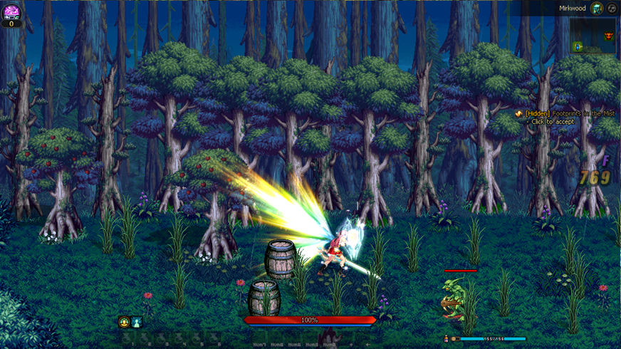

새 시안이 아니라 직접 찾아 확인한 원본 화면입니다. 이미지 비율을 유지했고 자르거나 배치를 바꾸지 않았습니다. 게임 코드는 변경하지 않았습니다.
하단 중앙 HP·MP 두 줄, 우하단에 작고 일정하게 정렬된 정사각 퀵슬롯. 우리 게임에는 이 배치 구조를 우선 참고하는 것을 제안합니다.

HP·자원과 스킬을 하단 중앙에 모은 실제 수련장 화면입니다. 엇갈린 원형 배치 대신 일정한 기준선의 작은 스킬 아이콘을 참고합니다.
2023년 사용자 게시물의 영상 캡처이며 공식 최신 UI 설명 자료는 아닙니다.

하단 중앙의 일렬 핫바와 HP·MP 파라미터 바. 다수의 스킬 줄을 우리 게임에 추가하자는 뜻은 아닙니다.
Square Enix 공식 매뉴얼 · 원본 이미지 열기

공식 안내의 막대형 HP·MP와 하단 스킬 슬롯 참고입니다. 이 이미지의 HP는 중앙, MP는 그 오른쪽에 따로 배치돼 있습니다.

메이플 구조를 바탕으로 HP·MP는 하단 중앙에 얇게, 스킬 5개는 우하단에 작은 정사각형 한 줄로 정렬. 1280×720 기준 아이콘 24×24px, 간격 4px로 아이콘 행 전체 136px 정도를 제안합니다. 이것은 우리 게임용 제안 치수이며 원본 게임의 공식 규격이 아닙니다.
단축키만 작게 남기고 ‘준비’·남은 초·스킬 이름은 상시 표시하지 않습니다. 쿨타임은 사용자 요청대로 테두리 충전으로 표현합니다. 게임 수치와 MP 코어는 변경하지 않습니다.